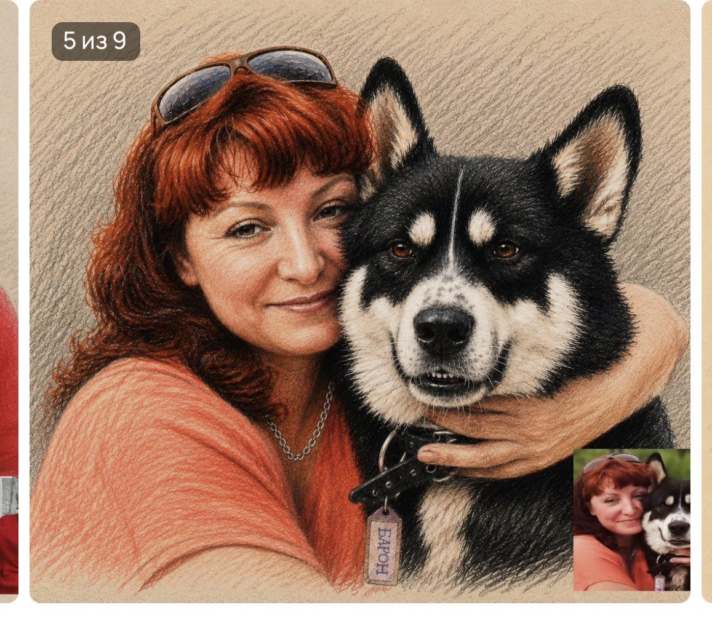
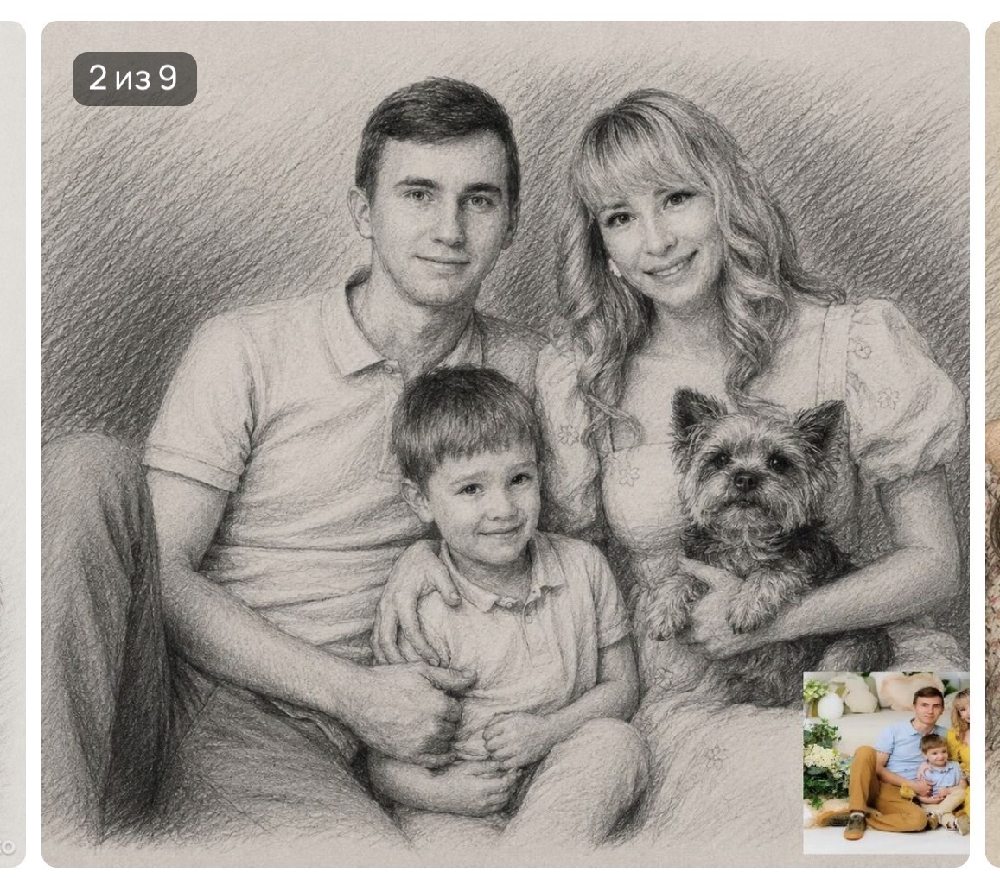
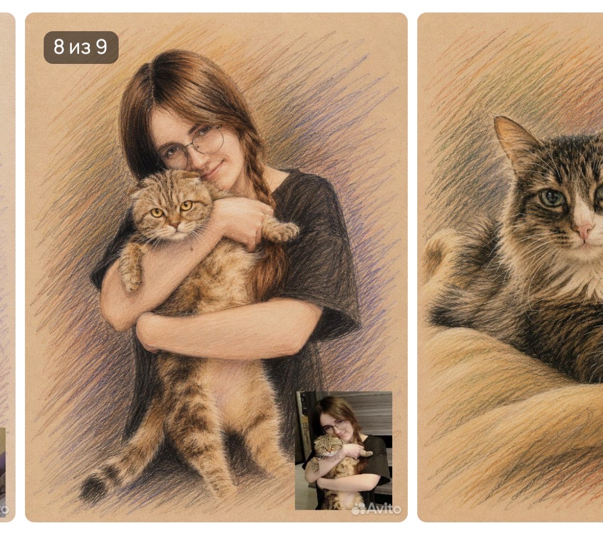
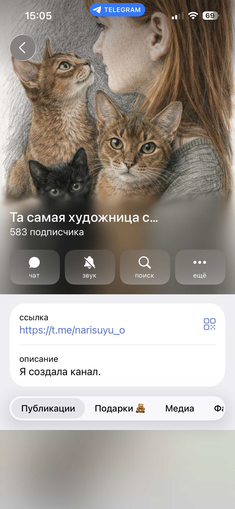

Без предоплаты
Оплата происходит после готового результата, чтобы клиент видел рисунок перед оплатой.
Портреты по фото · люди · питомцы · важные моменты
Аня создает теплые карандашные портреты по вашим фотографиям: человека, питомца, семьи, машины или дома. Готовый результат можно получить как фото и скан для печати.



Рисунок создается по вашим фотографиям, с вниманием к характеру и деталям.
Срок выполнения обычно от 1 до 7 дней, в зависимости от сложности.
Оплата после готового результата. Цена договорная, без фиксированного прайса.
Каталог
Галерея сделана модульно: новые рисунки можно добавлять постепенно, сохраняя аккуратную сетку и фильтры.
Как заказать
Напишите Ане в Telegram и отправьте фото, по которому нужен рисунок.
Обсудите формат, детали, срок и комфортную сумму за работу.
Получите фото готового рисунка и скан в хорошем качестве для печати.
Оплатите готовый результат. Оригиналы могут отправляться по стране отдельными партиями.

Об Ане
Аня из Алтайского края ведет Telegram-канал, показывает процесс, делится работами и собирает вокруг себя людей, которым важен живой, личный рисунок.
В ее портретах много мягкого карандашного штриха, теплых цветовых акцентов и эмоций: от семейных сцен до любимых животных, которых хочется сохранить не только на фото.
Перейти в TelegramДоверие
Оплата происходит после готового результата, чтобы клиент видел рисунок перед оплатой.
Кроме фото готовой работы можно получить скан в хорошем качестве.
В Telegram есть публикации, реакции, примеры работ и новости о заказах.
Для поиска
Если вы ищете, где заказать рисунок по фото, портрет питомца или теплый подарок близкому человеку, можно написать Ане в Telegram и отправить исходные фотографии.
Портрет кота, собаки или нескольких хвостиков с вниманием к взгляду, шерсти и характеру питомца.
Рисунок человека, пары или семьи по фотографии: для подарка, памяти или личного портфолио.
Кроме фото готовой работы можно получить скан в хорошем качестве, который подойдет для печати.
Связь идет через Telegram-канал и личные сообщения: без номера телефона на сайте.